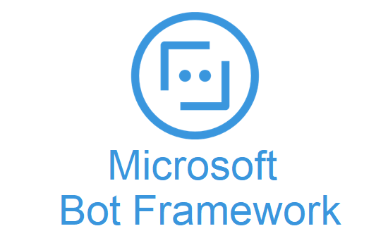
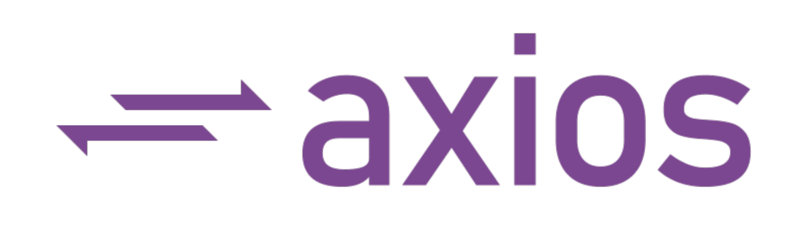

IMPLEMENTATION
- Home
- Implementation
Bot Structure Implementation
Tools & Dependencies

MS Bot Framework SDK is used for building up AvaBot.

The language for AvaBot structure and logic is
node.js

Restify is a Node.js web service framework for creating web service for AvaBot.

Axios is a promise based HTTP client for node.js, with which AvaBot can make http requests.
Impl. Overview
1. run AvaBot with a web service
AvaBot as a web app needs to create a web service, which is implemented by using Restify with a messaging endpoint. The service extracts the authentication header and request payload and forwards them to the Bot Adapter. The adapter receives activities from the messaging endpoint and forwards them to the bot.
// Create HTTP server.
const server = restify.createServer();
server.listen(process.env.port || process.env.PORT || 3978, function() {
console.log(`\n${ server.name } listening to ${ server.url }.`);
});
// Listen for incoming requests.
server.post('/api/messages', (req, res) => {
adapter.processActivity(req, res, async (context) => {
// Route the message to the bot's main handler.
await bot.run(context);
});
});
2. how AvaBot interacts with user
AvaBot implements the bot handler class, ActivityHandler, which uses an event emitter and listener pattern. It has two listener methods, the onMessage() registers a listener in response to messages and calls the run method of the bot’s dialog to start or continue the dialog, the onMembersAdded() listener is active when a first member joins the conversation. Each method ends by calling next() to ensure that the next listener is run.
class AvaBot extends ActivityHandler {
constructor(conversationState, userState, dialog) {
super();
...
this.onMessage(async (context, next) => {
console.log('Running dialog with Message Activity.');
// Run the Dialog with the new message Activity.
await this.dialog.run(context, this.dialogState);
await next();
});
this.onMembersAdded(async (context, next) => {
const membersAdded = context.activity.membersAdded;
for (let cnt = 0; cnt < membersAdded.length; cnt++) {
if (membersAdded[cnt].id == context.activity.recipient.id) {
await this.sendSuggestedActions(context);
}
}
await next();
});
}
...
3. AvaBot's waterfall dialog
AvaBot can talk with users interactively to perceive their needs and serve their demands. It is implemented with multi-turn and multi-branch conversation flows by creating prompts and calling them from waterfall dialogs. It contains 3 dialogs, the MainDialog for users to choose which feature to use and ask for necessary document uploading, the AnswerDialog to do QnA, and the DocDialog for users to obtain document processing results. Here is a piece of code from the mainDialog class, showing how bot’s dialog jumps from one step to the next:
async startStep(step) {
/* WaterfallStep always finishes with the end of the Waterfall or with another dialog; */
/* Running a prompt here means the next WaterfallStep will be run when the user's response is received.*/
const msg = step.options.restartMsg ?
step.options.restartMsg :
'What can I do for you?';
return await step.prompt(CHOICE_PROMPT, {
prompt: msg,
choices: ChoiceFactory.toChoices([
'ask a question',
'process a document',
'recognize an image'
])
});
}
async chooseStep(step) {
const choice = step.result.value;
...
}
4. how AvaBot receives document and sends for
processing
When the user chooses to process a document, AvaBot receives it and saves it to disk, while forwarding the document to document-processing APIs via HTTP POST request.
async docStep(step) {
if (step.result && step.result[0].contentUrl) {
var type = step.result[0].contentType;
var path = await this.handleIncomingAttachment(
step.context);
if (path) {
await step.context.sendActivity(
'Processing the document, please wait');
var data = await this.sendReq(path);
return await step.beginDialog(DOC_DIALOG, {
sum: data[0],
query: data[1],
form: data[2],
filepath: path
});
}
...
5. how AvaBot makes http requests
The received document will be sent to three APIs, where TextSum API will return the summary result, QA-system API will return the pre-processing status, and Form-Recog API will return table data. To optimize the overall processing time, we applied Promised.allSettled() method, which allows the requests to be sent simultaneously and halts the dialog until it has successfully obtained all the three results regardless of status (Other similar methods like Axios.all() would fail if any of the request failed).
async sendReq(path) {
...
let reqArr = [axios({
method: "post",
…
}), axios({
method: "post",
…
}), axios({
method: "post",
…
})];
var output = [];
await Promise.allSettled(reqArr).then(results => {
results.forEach(result => {
if (result.status == 'fulfilled') {
output.push(result.value.data);
} else {
output.push(0);
}
})
})
return output;
}
The processing results will be directed to DocDialog as the dialog branch begins, when the user will be asked whether they want doc-summary, table data or to do doc-query. The advantage of performing the requests before actually letting users to choose which document processing features they would like to utilize is that user only need to wait once at this stage and then can quickly get processing results when they ask for any of those rather than waiting for each of the request to be performed if they want to experience multiple features, even though they don’t, we can still guarantee the overall waiting time is optimal.
Question Answering Implementation
Impl. Overview
1. configure QnAMaker in AvaBot
The question answering feature is implemented by using the QnA Maker Azure service, which allows for quick establishment of a natural conversational layer over FAQ pages, support websites, product manuals, etc.. In AnswerDialog, AvaBot uses the connection information provided by the .env file to establish a connection to the QnA Maker service: this.qnaMaker.
class AnswerDialog extends ComponentDialog {
constructor() {
super(ANSWER_DIALOG);
try {
this.qnaMaker = new QnAMaker({
knowledgeBaseId: process.env.QnAKnowledgebaseId,
endpointKey: process.env.QnAEndpointKey,
host: process.env.QnAEndpointHostName
});
}
...
2. get answer for a question
After receiving the question from the user, AvaBot passes it to the QnA Maker service's getAnswers method to get answers from the knowledge base. If QnA Maker returns a response, it will be sent back to the user.
const qnaResults = await this.qnaMaker.getAnswers(stepContext.context);
var msg = '';
if (qnaResults[0]) {
msg = qnaResults[0].answer;
} else {
msg = 'No QnA Maker answers were found.';
}
The QnA Maker is able to parse and interpret the question intent for one question asked in different formats.
Text Summarization Implementation
Tools & Dependencies
The text-summary function is written in python.
NLTK: a python package for natural language processing
Sumy: a python module for automatic text summarization
Impl. Overview
1. pre-process document
The document-summary feature is implemented by using TextRank algorithm, referred to and originated from Sumy Python Module (miso belica, Kmkurn and Isarth). Before the summarization, the document is pre-processed with text split into sentences, non-ascii characters removed, and stop-words cleared off.
2. algorithm walk-through
TextRank is a graph-based ranking model for text processing. The vertices are the sentences in the text, and the edges between the vertices (sentences) are of a similarity weight of the two sentences, which is calculated by
The vertex weight can thus be obtained as shown by the formula, where Wij is the similarity weight added to the corresponding edge that connects the two vertices, d is a damping factor usually set to 0.85 (Brin and Page, 1998).
The power_method manipulates the matrix to be a column stochastic matrix. Then the sentence rank is obtained by iteratively dot-producting the stochastic matrix with the rank matrix (initially as [1,1,…,1]) until the rank matrix converges, i.e., the dot-product result is similar to the rank matrix that produces it).
The sentences are matched with their corresponding ranks, where top-ranked ones are displayed to users. The number of sentences to be displayed is heuristically set to be proportional to the document length with the upper limit at 20.
Table & Image Recognition Implementation
Tools & Dependencies
The table & image-recognition function was written in python.
Azure Form Recognizer API was used to recognize forms from documents and images.í
Impl. Overview
Among all types of images, we have particularly focused on the business-card model for now since it is one of the most commonly used image types for company employees. Here thus lifted the implementation for it as the example.
1. configure the Form Recognizer client
EndPoint and credential key are provided to establish a connection to the Form Recognizer service.
form_recognizer_client = FormRecognizerClient(ENDPOINT, AzureKeyCredential(KEY))
2. get the recognition results
The recognition results for an image of a certain model is obtained by calling the corresponding recognizing method, in this case, form_recognizer_client.begin_recognize_business_cards() is called. Having secured the recognition results, all the possible fields are iterated by using business_card.fields.get(INFO_FIELD), where available ones are collected, reformatted and returned.
def process(file_path):
with open(file_path, "rb") as card:
poller = form_recognizer_client.begin_recognize_business_cards(business_card=card, locale="en-GB")
business_cards = poller.result()
extractedInfo = []
...
contact_names = business_card.fields.get("ContactNames")
if contact_names:
for contact_name in contact_names.value:
extractedInfo.append("Contact First Name: {}\n".format(contact_name.value["FirstName"].value))
extractedInfo.append("Contact First Name: {}\n".format(contact_name.value["LastName"].value))
company_names = business_card.fields.get("CompanyNames")
if company_names:
...
...
return extractedInfo
3. connect to AvaBot via http requests
Every time a request is sent from AvaBot with the document provided by the user to the python function, which was deployed on Azure cloud, the main() method will generate and give back the recognition result in response.
def main(req: func.HttpRequest) -> func.HttpResponse:
file = req.files.get("file")
...
result = recogBusinessCard.process(file_path)
result_json = json.dumps(result)
return func.HttpResponse(result_json)
Here shows the demo of user requesting recognition of information from a business card: